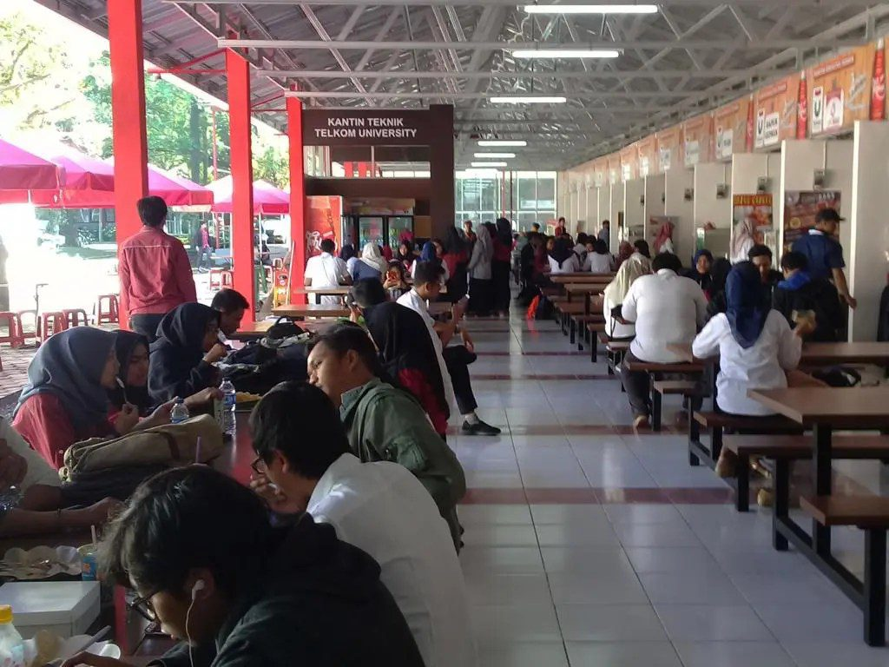
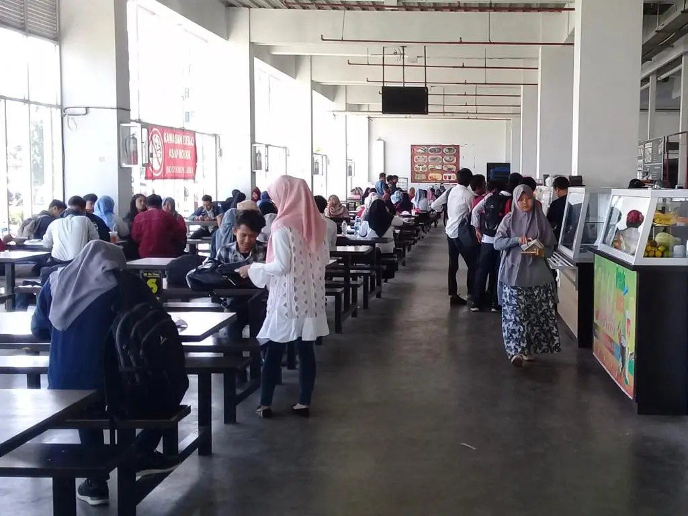
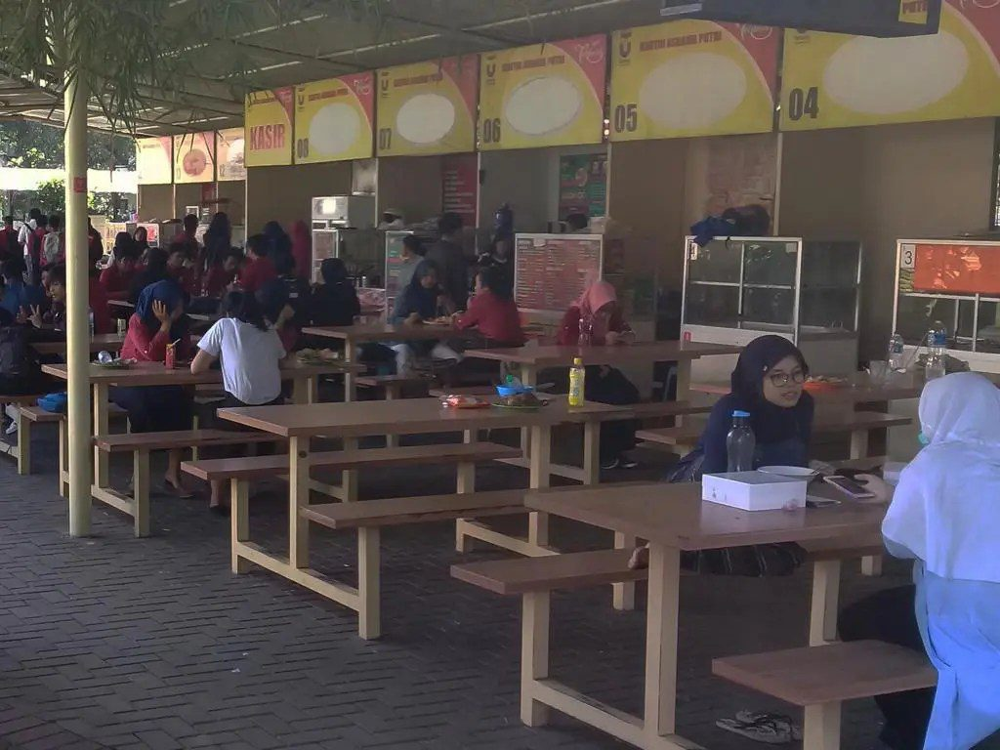
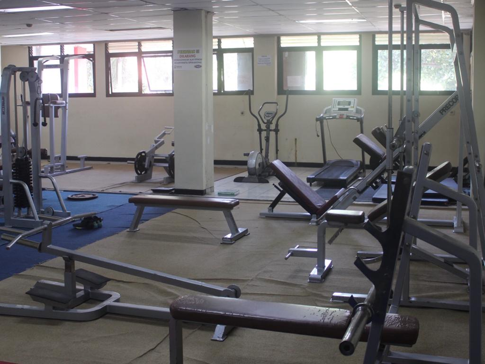
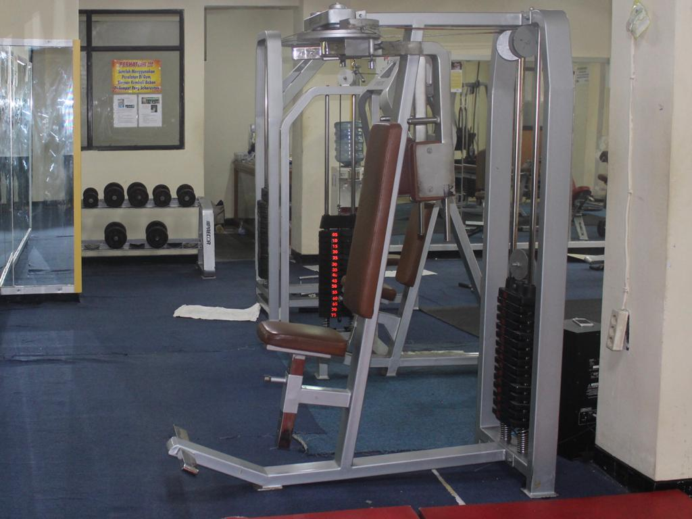
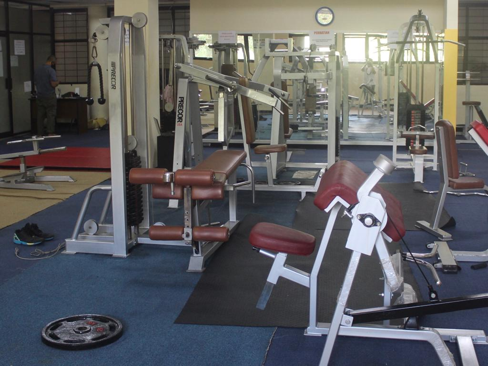

Sejarah
Telkom University, dulunya merupakan Sekolah Tinggi Teknologi Telkom (STT Telkom)
yang diresmikan oleh Presiden Soeharto pada tahun 1994. Pada tahun 2008,
STT Telkom berubah menjadi Institut Teknologi Telkom (IT Telkom). Lalu,
pada 14 Agustus 2013, di bawah naungan Yayasan Pendidikan Telkom (YPT),
berdirilah Telkom University atau Universitas Telkom.
Berdirinya Telkom University ini merupakan gabungan dari 4 institusi di bawah naungan YPT,
yaitu Institut Teknologi Telkom (IT Telkom), Institut Manajemen Telkom (IM Telkom),
STISI Telkom, dan Politeknik Telkom. Dulunya, para mahasiswa STT Telkom mendapat
beasiswa dan ikatan dinas. Namun, sejak menjadi universitas, Tel-U sudah tidak ada jalur ikatan dinas lagi.
Tapi tenang, Tel-U menyediakan jalur beasiswa penuh sampai lulus.

Visi dan Misi
Visi
- Menjadi research and entrepreneurial university pada tahun 2023,
yang berperan aktif dalam pengembangan teknologi, sains,
dan seni berbasis teknologi informasi.
Misi
- Menyelenggarakan dan mengembangkan pendidikan berstandar internasional berbasis teknologi informasi.
- Mengembangkan, menyebarluaskan dan menerapkan teknologi, sains, dan seni yang diakui secara internasional.
- Memanfaatkan teknologi, sains, dan seni untuk kesejahteraan dan kemajuan peradaban bangsa melalui pengembangan kompetensi entrepreneurial.
Fakultas
- Fakultas Teknik Elektro
- Fakultas Rekayasa Industri
- Fakultas Informatika
- Fakultas Ekonomi dan Bisnis
- Fakultas Fakultas Komunikasi dan Bisnis
- Fakultas Fakultas Industri Kreatif
- Fakultas Fakultas Ilmu Terapan
- Fakultas Fakultas Industri Kreatif
Program Studi
- S1 Teknik Telekomunikasi
- S1 Teknik Elektro
- S1 Teknik Industri
- S1 Sistem Informasi
- S1 Informatika
- S1 Rekayasa Perangkat Lunak
- S1 Data Sains
- S1 Akuntansi
- S1 Administrasi Bisnis
- S1 S1 Ilmu Komunikasi
- dll
Fasilitas
Kantin



Book Store
Social Room
Kolam Berenang
Fitness Center


